建立动作与耐受
拉伸感约 4–5/10，不追求最低点。
- 静态动作 2 组
- 每组 20–30 秒
- 力量动作保留 3 次余力
每周 5 天、每次约 25～42 分钟。重点不是硬压到底，而是同时提升前腿腘绳肌长度、后腿髋伸展，以及末端角度中的力量与控制。
适用于没有急性下肢伤病、能无痛完成弓步和髋铰链的成年人。旧伤或关节卡压者先由医生或物理治疗师评估。
任何阶段只要第二天仍有明显拉伤样疼痛，就退回上一阶段的幅度与组数。
拉伸感约 4–5/10，不追求最低点。
保持髋部朝正前方，再逐步下降。
在安全角度加入轻度等长收缩与 PNF。
第 7 周巩固，第 8 周先减量再复测。
每个训练日都先升温。力量动作在前，较长的静态拉伸和竖叉练习放在后面。
可轻松步行，但不做深度拉伸或强力下压。若前一日肌肉酸痛明显，周五训练量减少 20%。
不测试最低点。保证睡眠与正常蛋白质摄入，为下周训练保留恢复空间。
训练表中出现的每一个动作都在下方配有 GIF；同一基础姿势的 PNF 与等长版本另外标注收缩方法。全部文件已下载到本地。
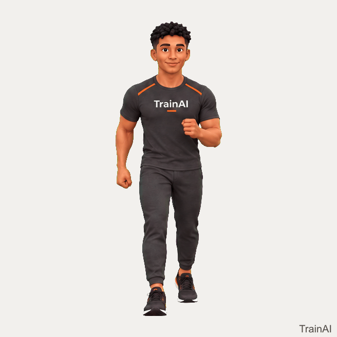
Brisk Walking
走到身体微热即可，不需走到气喘。
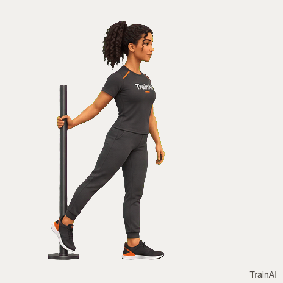
Leg Swing
扶稳固定物，从小幅度开始；骨盆不要随腿大幅旋转。
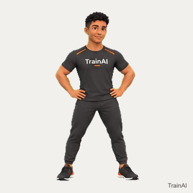
Standing Hip Circle
抬膝画圈，支撑腿膝盖微屈，躯干保持稳定。
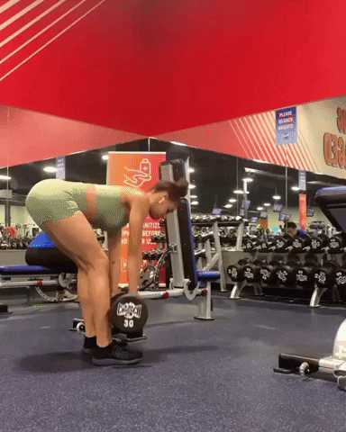
Romanian Deadlift
膝微屈、髋后移，重量贴腿；只下降到背部仍能保持中立的位置。
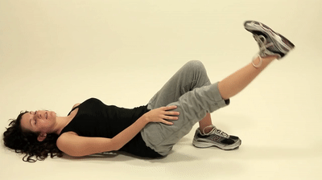
Active Straight-leg Raise
靠髋部主动抬腿，不用手拉；到顶端停 1 秒再慢慢放下。
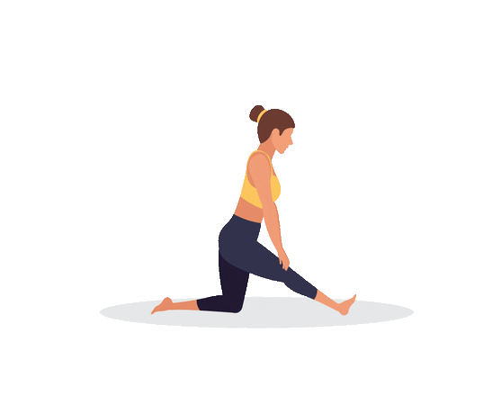
Half-split Hamstring Stretch
前膝可微屈，保持方髋并从髋部折叠，不弓背追求更低。
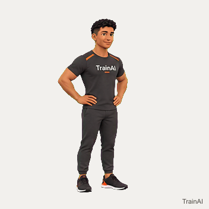
Reverse Lunge
后脚向后落地，前脚完整踩稳；保持骨盆朝正前方。
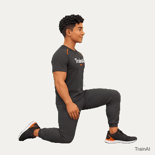
Kneeling Hip-flexor Stretch
先收臀、后倾骨盆，再轻微前移；若腰部挤压说明幅度过大。
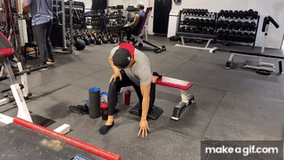
Couch Stretch
后膝垫软垫，收臀、肋骨下沉；腰部不能用力后仰。
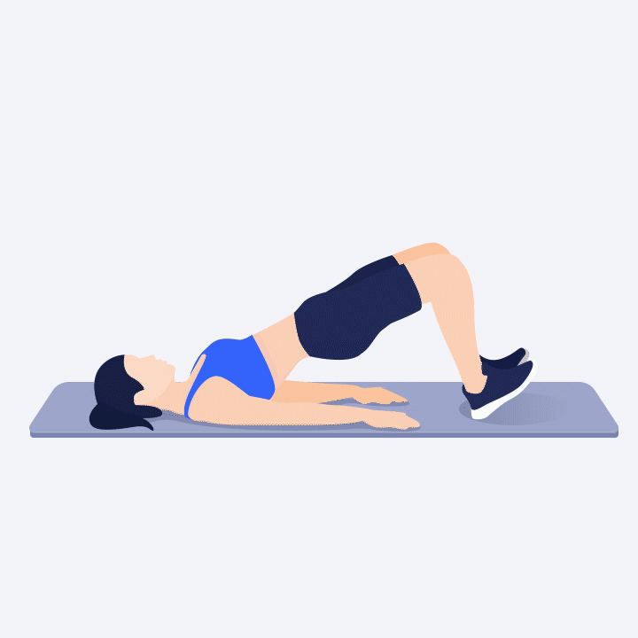
Glute Bridge
脚跟发力、顶部夹臀；后腿髋伸能力越好，越不必靠塌腰下叉。
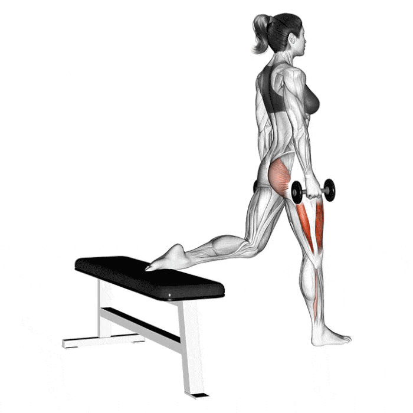
Bulgarian Split Squat
前脚承担主要负荷，后脚只辅助平衡；保持骨盆正对前方。
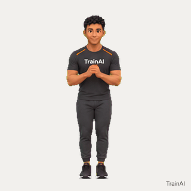
Lateral Lunge
臀部向后坐，弯曲侧膝盖跟随脚尖，另一腿自然伸直。
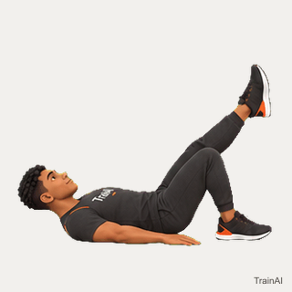
Single-leg Glute Bridge
骨盆保持水平；若腰部代偿，先缩小动作幅度。
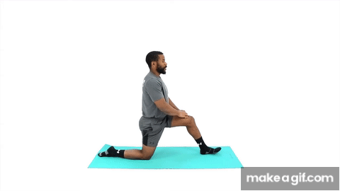
Low Lunge
后膝有软垫，收臀并保持胸口上提，不向前挤压腰椎。
Dynamic Low Lunge
在可控范围内前后缓慢移动，不在末端弹震。
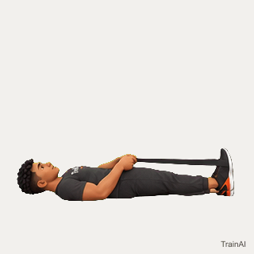
Contract–Relax Hamstring
脚跟向下压带 5 秒，力度约 30–40%；完全放松后保持 20 秒。
Contract–Relax Hip Flexor
后膝轻压垫 5 秒，收臀；放松后再进入拉伸 20 秒。
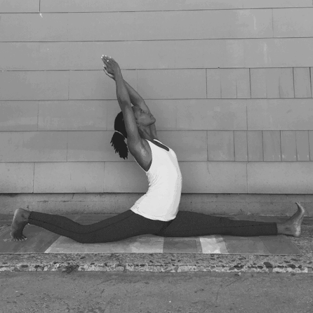
Supported Front Split
双手放瑜伽砖承重，前腿坐骨向后、后腿髋点向前，退出时先屈膝。
Front-split Isometric
双脚像要向中间拖但不移动，力度只用 30–40%，保持 8–10 秒。
Square-hip Split Slide
双手支撑，慢慢滑入并主动退出；一旦髋部旋开就停止下降。
固定在周五热身后、正式训练前测量；用同一块垫子和同一组瑜伽砖。不要冷身测试。
连续两周无进步很正常；若动作质量更好、方髋更稳定，也属于有效进步。
计划综合使用静态拉伸、PNF 与全幅度力量训练；图片仅用于动作识别，实际训练以动作提示和无痛范围为准。
肌肉升温后进行拉伸；单次可保持 10–30 秒并重复。
American Heart Association ↗系统综述显示，持续的静态拉伸训练能提升关节活动范围。
Sports Medicine / PubMed ↗全幅度抗阻训练也可改善活动范围，因此计划同时安排末端力量。
Systematic Review / PubMed ↗前腿以腘绳肌为主，后腿以髋屈肌和股四头为主。
Dani Winks Flexibility ↗热身、弓步与基础力量动作来自 TrainAI 可下载动作媒体目录，文件含帧数与校验信息。
TrainAI Creator Media ↗低弓步、半劈叉与前后竖叉演示来自柔韧训练及瑜伽动作资源。
Bheemashakti Yoga School ↗